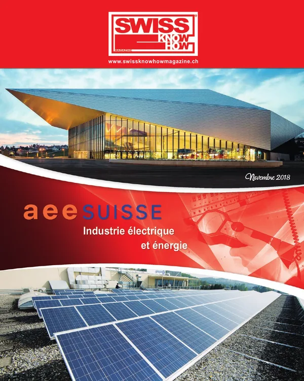

Texte intégral
Créée en 1996, la Société Electrique du Val-de-Travers (SEVT) s’appuie sur 33 collaborateurs, dont 5 apprentis, et réalise un chiffre d’affaires annuel de près de 6,5 millions de francs pour un bénéfice de 500 000 francs. Ses objectifs : des produits d’une qualité irréprochable, la promotion du développement durable et la formation d’apprentis.
Toujours à l’écoute de ses clients, la SEVT dispose d’un magasin d’appareils électroménagers doté d’un très important panel de toutes les plus grandes marques du marché. Il s’agit du dernier de son espèce dans la région du Val-de-Travers. Bien consciente du tourisme d’achat et des ventes croissantes par Internet, la SEVT n’en demeure pas moins attachée à une qualité de service irréprochable et cultive la proximité. En outre, son magasin dispose d’un service de réparation résolument tourné vers le développement durable. La SEVT accompagne également l’évolution des comportements d’achat : un magasin de vente en ligne sera mis en place d’ici la fin 2018.
À l’heure actuelle, la SEVT ambitionne avant tout de maintenir l’emploi dans le Val-de-Travers et de rester un acteur incontournable du secteur de l’énergie. Elle espère ainsi croître en taille et promouvoir la production photovoltaïque aux côtés de la production hydro-électrique. Elle envisage enfin de construire d’ici 2021 un nouveau siège, toujours à Couvet mais sur une artère plus passante. Un gage de visibilité et de longévité !
La SEVT est aussi synonyme d’installations électriques générales. À ce titre, elle est compétente pour tout type de réalisation, depuis la simple réparation jusqu’à l’installation complète de villas, appartements et autres sites industriels. Des installations toujours conformes aux attentes du client en termes de délai, de prix et de normes en vigueur. Dans ce dernier domaine, les évolutions rapides de la loi contraignent les 15 collaborateurs de la SEVT dédiés exclusivement aux installations à se former régulièrement.
La SEVT est aussi productrice d’énergie électrique. Créées en 1896, ses deux usines hydroélectriques fournissaient encore un tiers de l’énergie consommée dans le Val-de-Travers il y a quelques années. Cette production s’étant effondrée depuis, la SEVT a lancé un projet de renouvellement de son parc hydro-électrique en vue de produire 20 GW/h d’énergie propre, verte et locale d’ici quatre ans. Le dossier est en voie de finalisation au niveau des services de l’État.
Soucieuse de pérenniser son activité, la SEVT a conclu deux partenariats stratégiques avec des acteurs de premier plan du secteur. Grâce à son partenariat avec Groupe E, elle peut proposer des prestations à des prix plus compétitifs à ses clients. Si elle reste propriétaire du réseau, elle autorise Groupe E à transiter par ce réseau afin de proposer de l’énergie aux clients finaux, ce qui accroît sa base de clientèle. Son partenariat avec ELITE Electro est tout aussi important : il permet à son magasin d’appareils électroménagers de bénéficier de prix d’achat en gros, et donc de proposer de meilleurs prix de vente à ses clients. Par ailleurs, ELITE Electro édite un magazine touchant l’ensemble de la population du Val-de-Travers, gère un portefeuille d’assurance qui lui donne accès aux conseils de spécialistes neutres et indépendants et assure la gestion de son site Internet – en attendant d’assumer aussi celle de la future boutique en ligne.
Texte paru dans Swiss Knowhow – AEE Suisse : industrie électrique et énergie 2018, p. 44, tel que publié dans l'édition imprimée. En cas d'écart, la version imprimée fait foi.

Paru dans
Swiss Knowhow – AEE Suisse : industrie électrique et énergie 2018
2018 · page 44 · article original en français
Signaler une erreur Lire l'article complet PDF